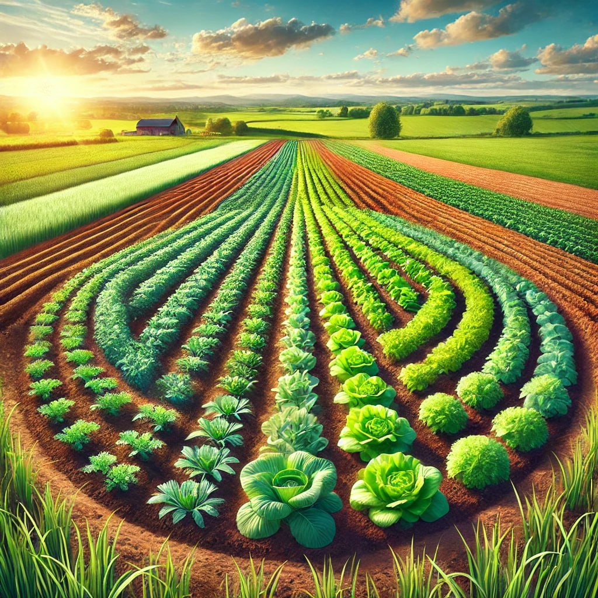

تاریخ انتشار : 2 روز پیش

مقدمه
تناوب زراعی یکی از روشهای کهن و مؤثر در کشاورزی است که تأثیرات چشمگیری بر سلامت خاک، کنترل طبیعی آفات و افزایش بهرهوری دارد. این روش با تغییر دورهای نوع محصول کشتشده در یک زمین کشاورزی، تعادل طبیعی را حفظ کرده و مانع از گسترش بیماریها و آفات میشود. در این مقاله، مزایای تناوب زراعی و راهکارهای بهینه اجرای آن را بررسی میکنیم.
تأثیر تناوب زراعی بر سلامت خاک
1. افزایش حاصلخیزی خاک: برخی گیاهان مانند حبوبات، توانایی تثبیت نیتروژن در خاک را دارند که باعث افزایش مواد مغذی و کاهش نیاز به کودهای شیمیایی میشود.
2. بهبود ساختار خاک: ریشههای مختلف گیاهان در عمقهای متفاوت خاک رشد میکنند و به بهبود تهویه و ساختار خاک کمک میکنند.
3. کاهش فرسایش خاک: کشت گیاهان پوششی در تناوب زراعی باعث کاهش فرسایش خاک در برابر باد و آب میشود.
کنترل طبیعی آفات با تناوب زراعی
1. قطع چرخه زندگی آفات: بسیاری از آفات وابسته به یک نوع محصول خاص هستند. تغییر محصول باعث از بین رفتن شرایط ایدهآل برای رشد و تکثیر آنها میشود.
2. کاهش بیماریهای خاکزاد: برخی بیماریهای قارچی و باکتریایی که در خاک باقی میمانند، با تغییر نوع کشت فرصت رشد و گسترش پیدا نمیکنند.
3. افزایش تنوع زیستی: تناوب زراعی موجب افزایش تنوع گیاهی شده و باعث جذب حشرات مفید و کاهش آفات میشود.
الگوهای مؤثر در تناوب زراعی
1. تناوب غلات و حبوبات: ترکیب غلات مانند گندم و جو با گیاهان تثبیتکننده نیتروژن مانند نخود و لوبیا باعث تقویت خاک میشود.
2. کشت متناوب سبزیجات و گیاهان صنعتی: جایگزینی سبزیجاتی مانند کاهو و گوجهفرنگی با گیاهانی مانند پنبه یا کلزا، مانع از افزایش بیماریهای خاکزاد میشود.
3. استفاده از گیاهان پوششی: مانند شبدر و یونجه که علاوه بر تثبیت نیتروژن، پوشش خوبی برای جلوگیری از فرسایش خاک فراهم میکنند.
نتیجهگیری
تناوب زراعی یکی از بهترین روشهای طبیعی برای حفظ سلامت خاک و کاهش آفات بدون نیاز به سموم شیمیایی است. این روش نهتنها باعث افزایش بهرهوری و پایداری کشاورزی میشود، بلکه به کاهش هزینههای کشاورزی نیز کمک میکند. اجرای صحیح تناوب زراعی نیازمند برنامهریزی دقیق و آگاهی از نیازهای خاک و گیاهان مختلف است. با استفاده از این روش، کشاورزان میتوانند زمینهای خود را بهصورت پایدار و پرثمر مدیریت کنند.
👍 دیدگاه بگذارید
0 نظر